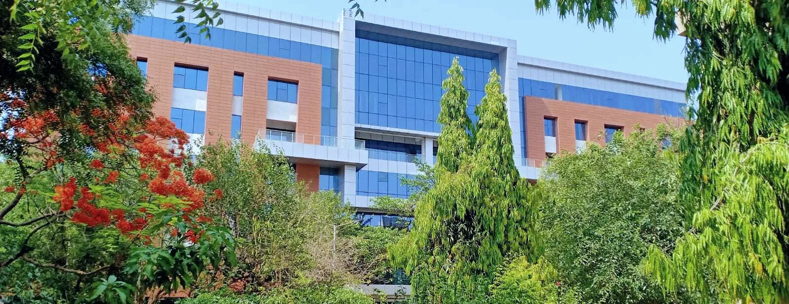
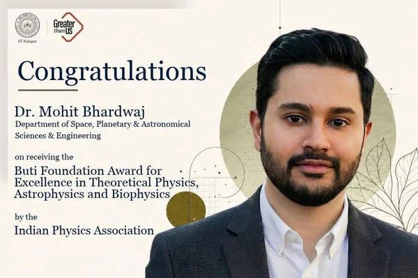
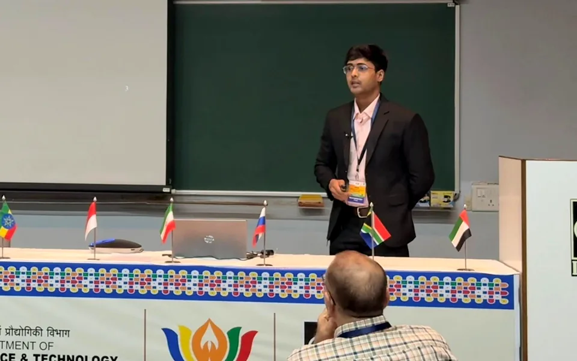
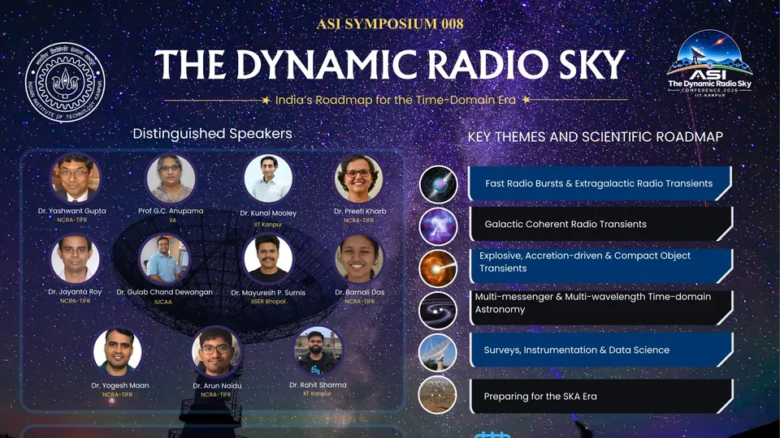
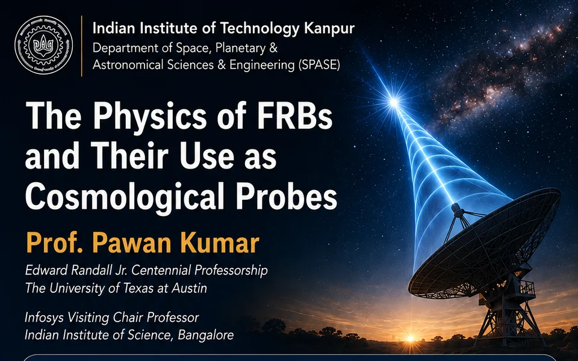
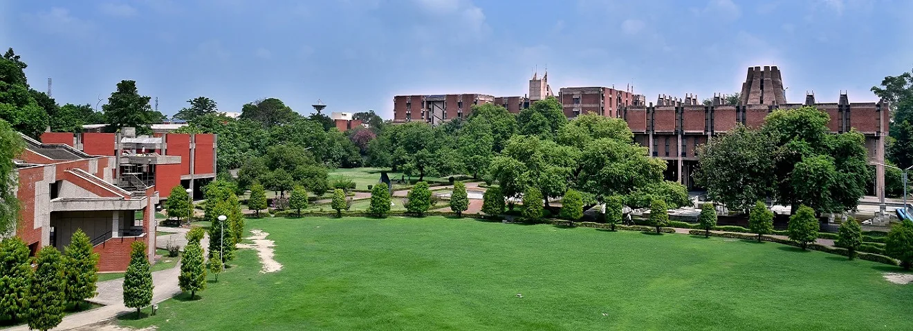
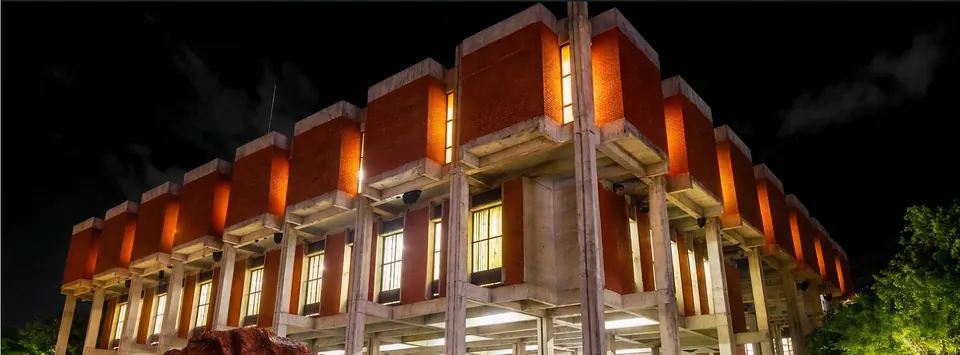
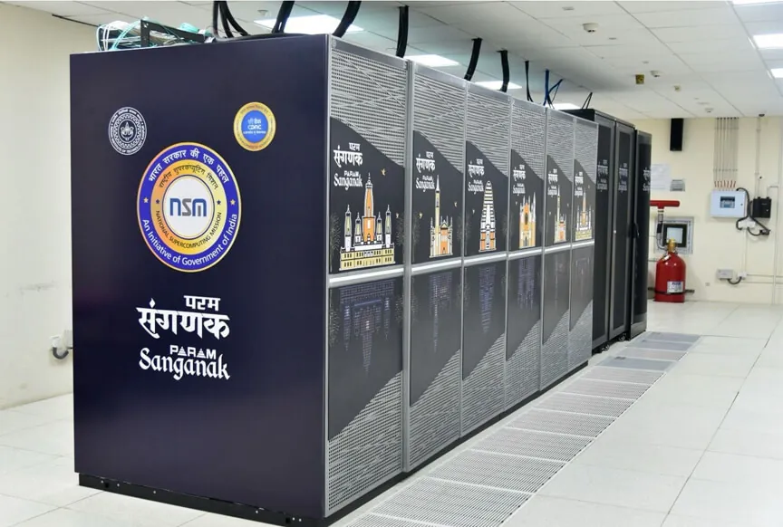
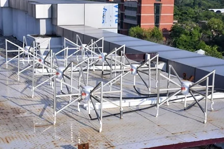
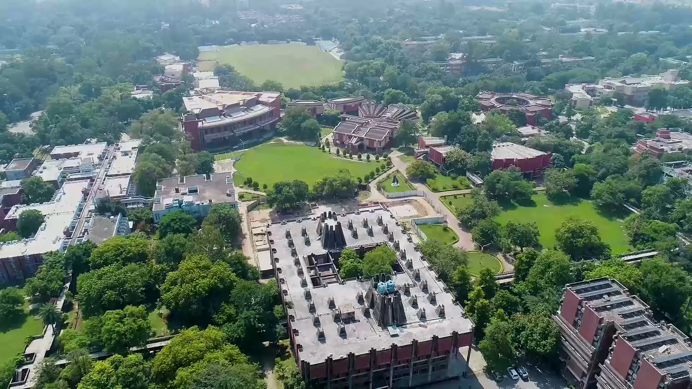

Exploring the dynamic radio universe

Stellar Transient Analysis and Radio Burst Exploration and Mapping Squad
STARBEAMS, led by Prof. Mohit Bhardwaj at SPASE, IIT Kanpur, studies how the radio sky changes, from millisecond bursts to sources that evolve over years, and builds the tools to catch them.
Recent activities

Buti Foundation Award 2026
From the Indian Physics Association, to Prof. Bhardwaj.

BRICS Astronomy Working Group
A talk on fast radio bursts at IUCAA, Pune.

The Dynamic Radio Sky
ASI Symposium 008, three days at IIT Kanpur.

Prof. Pawan Kumar at SPASE
A seminar on the physics of fast radio bursts.
Campus and facilities
-

Life at IIT Kanpur
-

P K Kelkar Library
-

Research facilities
-

Radio astronomy laboratory
Recent papers
The Astrophysical Journal, 2026
Unveiling the Local Environment of FRB 20220912A: Sub-arcsecond 4-26 GHz Radio Continuum Mapping
The Astrophysical Journal, 2026
CHIME/Slow overview and pilot survey: A new backend to search for second-duration radio transients with the CHIME telescope
The Astrophysical Journal Letters, 2026
A Spatial Gap in the Sky Distribution of Fast Radio Burst Detections Coinciding with Galactic Plasma Overdensities

PhD, M.Tech, postdoc or collaboration
PhD and M.Tech students join through SPASE admissions, and postdoctoral researchers through the IIT Kanpur institute fellowship. Researchers elsewhere are welcome to write about a collaboration.